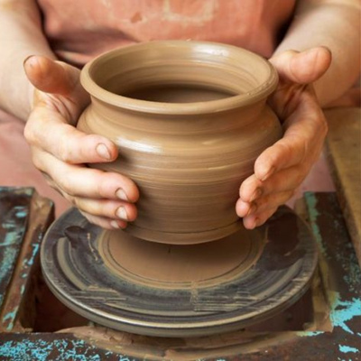
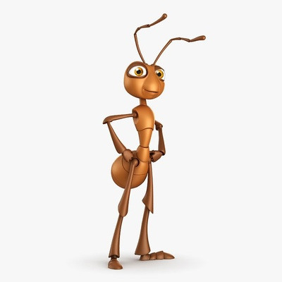

Круг
Самые первые круглые колеса были сделаны в Месопотамии в 3500-3000 гг. до н. э. Они представляли собой гончарный круг и тележное колесо.


Если группа муравьев отделяется от основных фуражиров, то она может потерять дорожку феромонов. Так муравьи начинают следовать друг за другом. Они образуют непрерывно вращающийся круг и продолжают идти, пока не умирут от истощения.